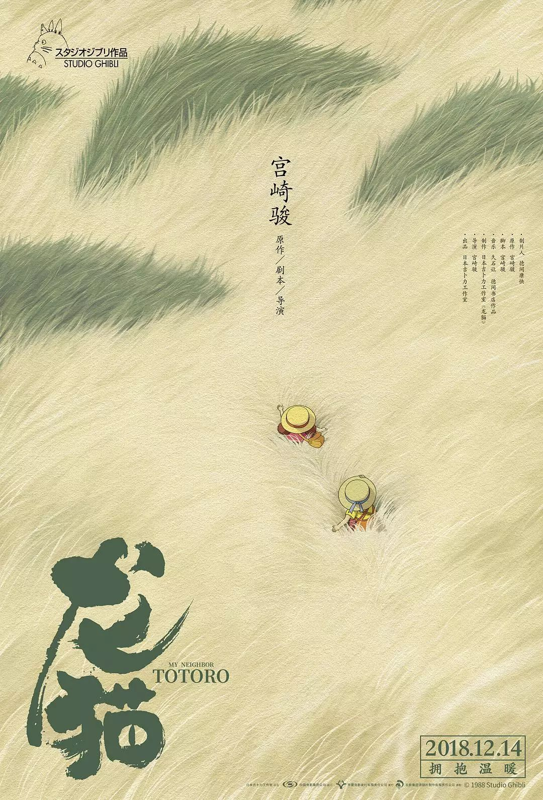

HOME

My Neighbor
[Theme song of the Studio Ghibli film , Totoro: My Neighbour]
中日文歌词
龙猫 龙猫 龙猫
トトロ トトロ トトロ トトロ
有人偷偷
だれかが こっそり
在胡同里埋坚果
小路に 木の実 うずめて
当一个小芽长出来时，一个密码
ちっさな芽 生えたら 秘密の暗号
森林通行证
森へのパスポート
奇妙的冒险开始了
すてきな冒険はじまる
龙猫 龙猫 龙猫 龙猫
となりのトトロ トトロ トトロ トトロ
我在树林里住了很长时间
森の中に むかしから住んでる
龙猫 龙猫 龙猫 龙猫
となりのトトロ トトロ トトロ トトロ
我只在我还是个孩子的时候拜访你
子供のときにだけ あなたに訪れる
奇怪的相遇
不思議な出会い
下雨的巴士站
雨ふり バス停
如果祖布努尔有鬼
ズブヌレ オバケがいたら
我会给你你的雨
あなたの雨ガサ さしてあげましょ
森林通行证
森へのパスポート
魔法门打开
魔法の扉 あきます
龙猫 龙猫 龙猫 龙猫
となりのトトロ トトロ トトロ トトロ
我在月夜吹我的陶笛
月夜の晩に オカリナ吹いてる
龙猫 龙猫 龙猫 龙猫
となりのトトロ トトロ トトロ トトロ
如果能遇见你，那将是莫大的幸福
もしも会えたなら すてきな しあわせが
我正在往你的地方去
あなたに来るわ
龙猫 龙猫 龙猫 龙猫
となりのトトロ トトロ トトロ トトロ
我在树林里住了很长时间
森の中に むかしから住んでる
龙猫 龙猫 龙猫 龙猫
となりのトトロ トトロ トトロ トトロ
我只在我还是个孩子的时候拜访你
子供のときにだけ あなたに訪れる
奇怪的相遇
不思議な出会い
龙猫 龙猫 龙猫
トトロ トトロ トトロ トトロ
龙猫 龙猫 龙猫
トトロ トトロ トトロ トトロ
龙猫 龙猫 龙猫
トトロ トトロ トトロ トトロ
龙猫 龙猫 龙猫
トトロ トトロ トトロ トトロ